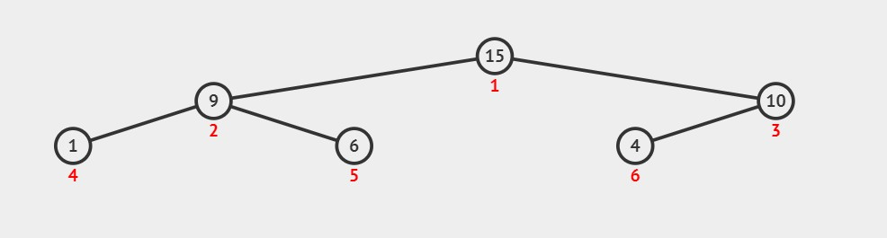

浅谈二叉堆与priority_queue
二叉堆的前言
二叉堆是一种支持插入，删除，查询最值的二叉树。
二叉堆是一种满足堆性质的二叉树,一般可分为大根堆和小根堆。
其中,大根堆满足:对于任意的父节点，其值大于子节点。
反之，小根堆满足:对于任意的父节点，其值小于子节点。

(图为大根堆)
二叉堆操作
二叉堆准备操作
我们以大根堆为示范讲解。
1 |
|
二叉堆操作·插入
对于新元素，我们默认把他放在数组尾部,然后调用up()函数一次次和父节点交换来达到自己真正的位置。
1 | void up(int p){ //将p向上调整到正确的位置 |
二叉堆操作·查询最值
这个比较简单,大根堆我们一直在维护他的最大值，直接printf根节点即可。1
2
3int Max(){
return heap[1];
}
二叉堆操作·删除根节点
对于删除根节点，我们采用将根节点和数组末尾元素交换位置，并将指针前移，随后调用down()函数，将交换到根部的末尾元素向下找到他真正的位置。
1 | void down(int p){ |
这里有一个小小的细节,在代码的 $ line4 $ 我们可以看到判定条件是 s<n , 想一想 , 为什么不是 s<=n ?
其实这个问题也很简单，我们假设s==n,那么若数组尾部放了一些莫名其妙的数据，导致 heap[s]<heap[s+1] ,那么我们的s==n+1。
二叉堆操作·删除任意节点
其实删除任意节点的思路和删除根节点的一样，我们把它和数组末尾元素交换位置，并且减小指针。
但这时候，这个二叉树并不满足大根堆性质，这个元素可能是需要向上调整，也可能向下调整。(向上或向下其一)
1 | void remove(int p){ |
STL中的大根堆——priority_queue
众所周知呀,C++的STL很香,今天我们就来介绍一下很香的 priority_queue (优先队列),我们可以用它简单的实现一个堆，默认 priority_queue 实现的是大根堆，但是我们可以通过设置使它实现小根堆。
声明priority_queue
1 |
|
操作
1 | s.push(k); //向s中插入k |
但是，值得注意的是，priority_queue并不支持 remove 操作，需要自己手写。
priority_queue实现小根堆
方法一：只要在声明的时候改一点点就好。
1 | priority_queue<int,vector<int>,greater<int>> s; |
方法二：维护数据的相反数，在输出的时候乘以 -1
推荐网站:
训练指南: